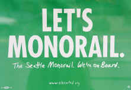

|
|
- see also:
- 2004-09-29: an edited version of this perspective on the Orcmid's Lair Blog

I was pleased to vote for it in 2002, the first election where I cast a ballot as a Seattle resident (although I am a native Washingtonian). I am delighted to observe the development of the project and how it is maintaining high standards of accountability in terms of the project and in the response of the City of Seattle planning and development organizations.
Although the construction of the monorail was approved in a sequence of public ballot initiatives culminating in the November, 2002 go-ahead for the Monorail Authority, there are those who want a do-over and repeal. This is instead of holding to the built-in accountability and cost-tracking that is part of the oversight of the project. Indeed, the device by which the monorail is to be blocked is by preventing the City of Seattle from providing any public right-of-way for use by a monorail. It's a devious parliamentary-end-run maneuver to earn reconsideration where none is neither available nor warranted.
Some people have concerns and objections that are perfectly sensible. These are masked by the outlandish, strident claims and devious maneuvers that are used to shout against the continuation of the project. It's also costing all of us in Seattle almost another million bucks to have the latest initiative on the ballot. Those funds would have been far better spent in seeing how to address the genuine, practical questions that people have.
Because there is so much noise sprayed at this question, I wanted to satisfy myself about the actual facts, without taking anything on faith. These can all be confirmed and verified through public sources. They take the form of small articles that address particular questions raised about the monorail. Sometimes they are my questions, sometimes they are the questions to which others are offering too-easy answers.
And, to keep things straight, as well as stay in focus, I am going to make separate postings on different aspects of the question. Here's what there is.
W040901b: Hugging the Monorail - Counting Noses
| You are navigating Orcmid's Lair |
created 2004-09-29-12:04 -0700 (pdt) by orcmid |